DIA 1 BOG – LONDRES – HOSPEDAJE
Abordamos nuestro vuelo con destino a Londres donde nos recibirá nuestro
transporte privado que nos llevara desde el aeropuerto al hotel.
DIA 2 LONDRES
Llegando a Londres abordaremos nuestro transporte privado que nos llevará desde
el aeropuerto al hotel; registro y hospedaje, tarde libre con actividades sugeridas. Cena.
DIA 3 LONDRES
Desayuno y salida para realizar nuestro recorrido a bordo del TURIBUS que nos llevará a los puntos más importantes de la ciudad con libres paradas y subidas para disfrutar a nuestro ritmo durante todo el día. LONDON EYE, BIG BEN, WESTMINSTER,
JAMESS PARK, BUKINGHAM PALACE, CHINA TOWN, COVEN GARDEN, ETC.
DIA 4 LONDRES
Desayuno y tomaremos uno de los famosos buses de dos pisos característicos de Londres para acceder al Museo Británico donde podremos apreciar desde MOMIAS de faraones del antiguo Egipto hasta piezas de un atuendo SAMURAI, pasando por la PIEDRA ROSSETA,UNA RELIQUIA DE LA CORONA DE ESPINAS DE JESUS y hasta un MOAI de la isla de pascua en una visita rápida, pues tomaría semanas conocer todo el museo; almorzaremos para luego visitar la NATIONAL GALLERY, saliendo, recorreremos
Picadlly hasta Hyde Park donde podremos contemplar la naturaleza relajarnos observando
las aves en el lago serpenteante, la fuente de la PRINCESA DIANA o la estatua de PETER PAN.
DIA 5 LONDRES – LIVERPOOL
Desayuno y mañana libre para compras, a medio día tomaremos el tren para Liverpool,
alojamiento y en la noche visitaremos la famosa Cavern Club (no incluye ingreso ni consumos)
lugar donde inició la historia de los BEATLES.
DIA 6 LIVERPOOL
Desayuno e inicio de nuestra jornada por este famoso puerto de Inglaterra a bordo del Turibus con libres subidas y bajadas
para disfrutar a nuestro ritmo esta maravillosa ciudad; podremos visitar la catedral Anglicana y la catedral católica, el
puerto donde encontraras el Museo marítimo;
Estrawberry field, Anfield, Museo del Liverpool F.C Y MUCHO MÁS.
DIA 7 LIVERPOOL- EDIMBURGO
Desayuno y nos dirigiremos a la estación de Lime Street para tomar nuestro tren con destino a Edimburgo,
contemplaremos la hermosa geografía de ESCOCIA en nuestro recorrido, alojamiento,
en la tarde haremos un recorrido guiado por el centro de la ciudad el Castillo de Edimburgo,
Parque de Holly Rood, Catedral de San giles, Jardines de Princes Street, cena y los más osados
podremos hacer el tour de fantasmas por las viejas calles y lugares de la ciudad.
DIA 8 EDIMBURGO
Desayuno y día libre para actividades sugeridas: MUSEO DEL WHISKEY,
MONUMENTO A WILLIAM WALLACE, LAGO NESS Y HIGHLANDS. Cena.
DIA 9 EDIMBURGO - OPORTO
Desayuno y nos dirigimos al aeropuerto para nuestro vuelo con destino a Oporto; llegada y alojamiento, mañana libre y almuerzo; en la tarde haremos un recorrido por el centro histórico iniciando en la catedral para luego perdernos por los callejones encantadores con miles de historias que se han narrado desde el medioevo , veremos la estación de SAO BENTO con sus maravillosos azulejos, visitaremos la LIVRARIA LELLO considerada una de las más bellas del mundo, junto al RIO DUERO, tendremos una tarde memorable envueltos entre deliciosos aromas, artistas y música.
Podremos finalizar la jornada con una cata de vino y espectáculo de FADO (no incluido)
DIA 10 OPORTO
Desayuno, explora a tu ritmo a bordo del Turibus, la histórica y pintoresca ciudad de OPORTO
con subidas y bajadas libres por SANTA CATARINA y BATALHA , almuerzo en el barrio de RIBEIRA
y cata de vinos en bodegas de CALES CALLEM (incluido) donde se produce
el vino de oporto de mayor calidad desde 1859 y al atardecer un crucero por el RIO DUERO.
Día 11 OPORTO –LISBOA
Saldremos temprano con destino a la hermosa ciudad de Lisboa , desayuno a bordo, al llegar después de registrarnos en nuestro hotel, daremos un paseo libre por el centro histórico, podremos aprovechar para degustar los famosos PASTEIS DE NATA que solo podrás probar en Lisboa. Tomaremos un almuerzo típico en el MERCATO PATEO. Disfruta el clima para relajarte por las calles y plazas de la
ciudad más antigua de Europa, contempla el atardecer en la TORRE DE BELEM.
DIA 12 LISBOA
Desayuno, tomaremos el Turibus de Lisboa para hacer nuestro recorrido por la ciudad podrás ver la Rua do Comercio,
Monasterio de Los Jeronimos, Monumento a los Descubrimientos,
Elevador de Santa Justa, La Catedral, Mirador de la Montaña, Castillo de San Jorge
Y mucho más. Si aún tienes energía, el barrio de Alfama te espera para una experiencia de Fado y
bebidas de Portugal (no incluido).
DIA 13 LISBOA - MADRID
Día libre, sugerimos visitar COBA DE IRIA (SANTUARIO DE FATIMA), SINTRA O NAZARÉ. En la noche nos dirigiremos al terminal de oriente para
tomar nuestro transporte a MADRID, llegada y alojamiento.
DIA 14 MADRID
Desayuno, mañana libre y al medio día tomaremos nuestro almuerz o típicoespañol en Gran Via, posteriormente visitaremos la Puerta de Alcala Y Parque del Retiro, al final de la tarde podremos ingresar
al Museo del Prado uno de los más importantes del mundo.
DIA 15 MADRID
Visitaremos la Catedral de la Almudena muy cerca encontraremos el Palacio Real (recomendado) y posterior a una breve caminata por los jardines de Sabatini
tendremos la oportunidad de entrar a un autentico templo egipcio El Templo del Debod que fue trasladado piedra por piedra desde su origen hasta el centro de Madrid,
en la zona tendremos reservado nuestro
almuerzo de cierre de esta experiencia por el Reino Unido, Portugal Y España.
DIA 16 MADRID – BOGOTA
Desayuno y mañana libre, a las 11am tomaremos nuestro transporte al aeropuerto de Barajas para tomar nuestro vuelo de regreso.
FIN DE NUESTROS SERVICIOS.
INCLUYE:
NO INCLUYE:
NOTA: los cambios opcionales al itinerario podrían suponer el pago de un suplemento adicional (los casos particulares se tratarán directamente)
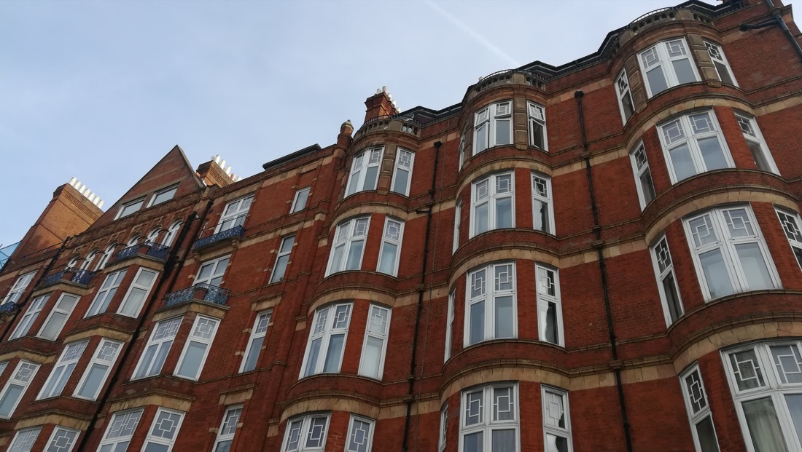
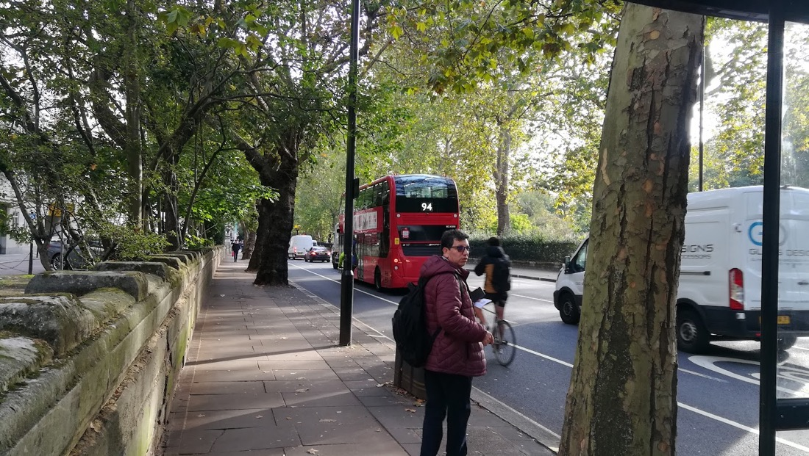
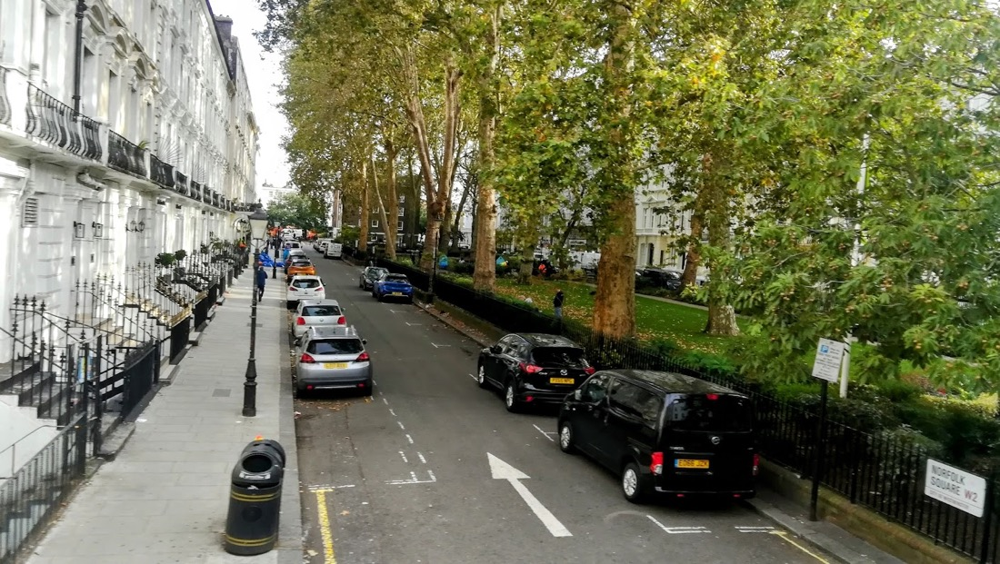
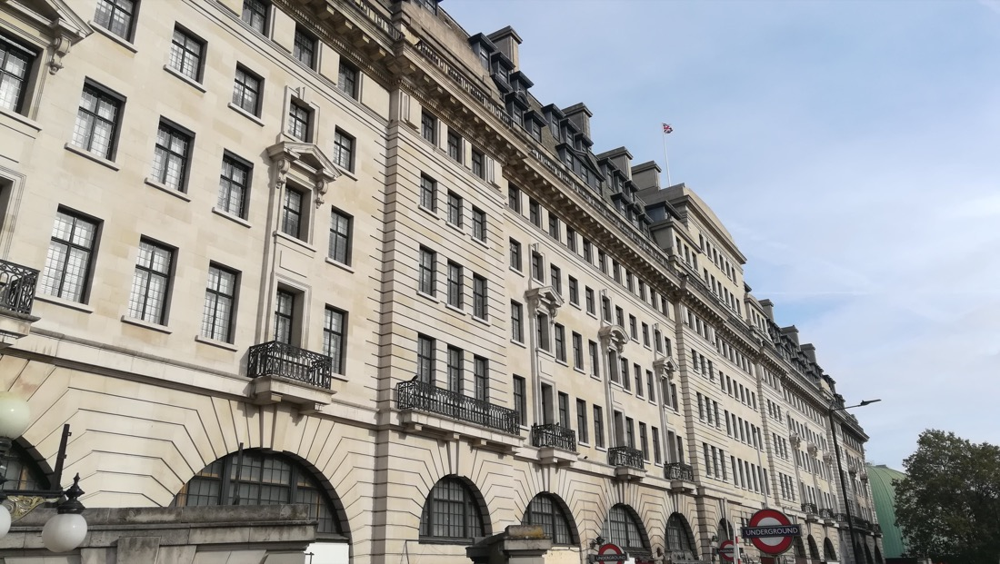
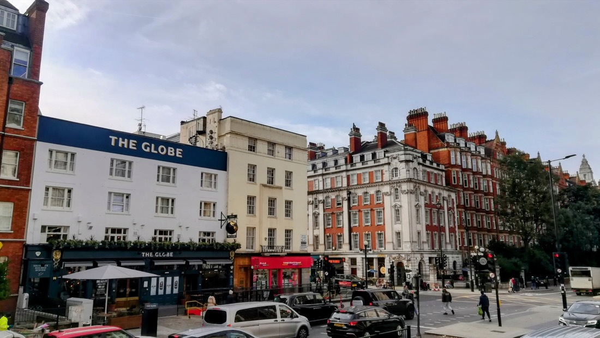
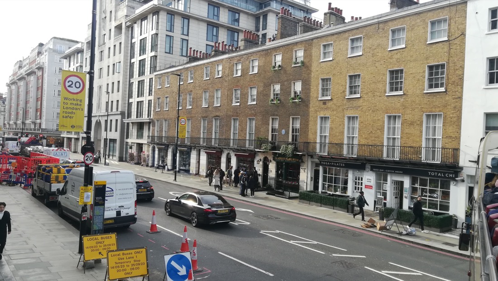
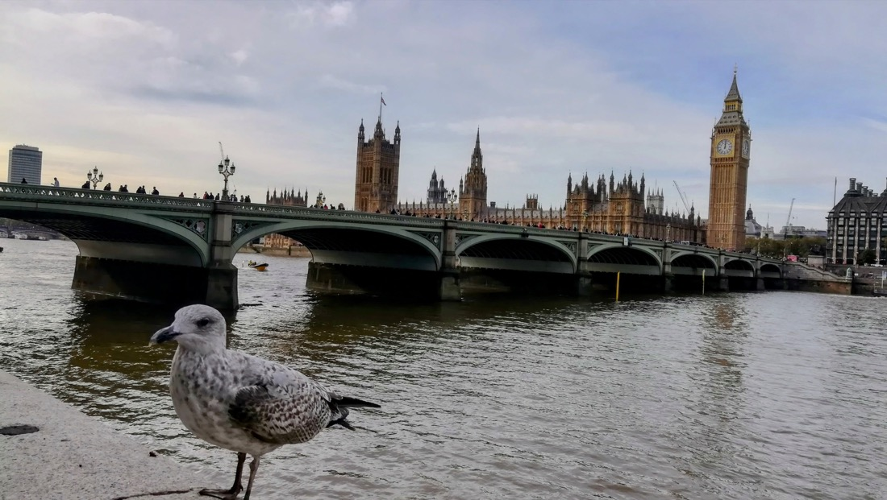
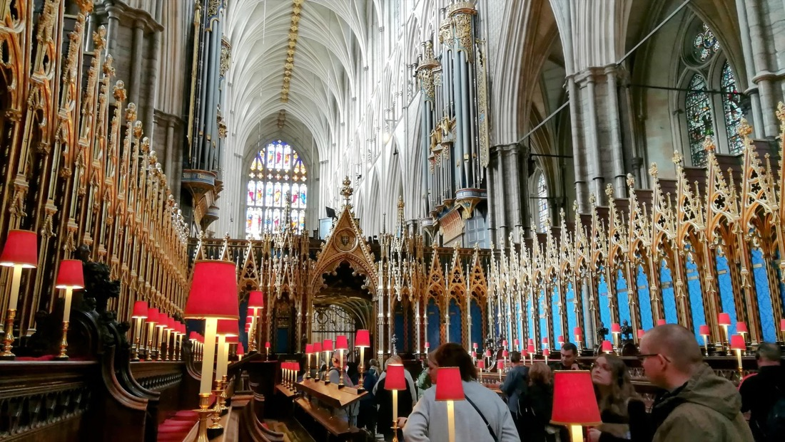
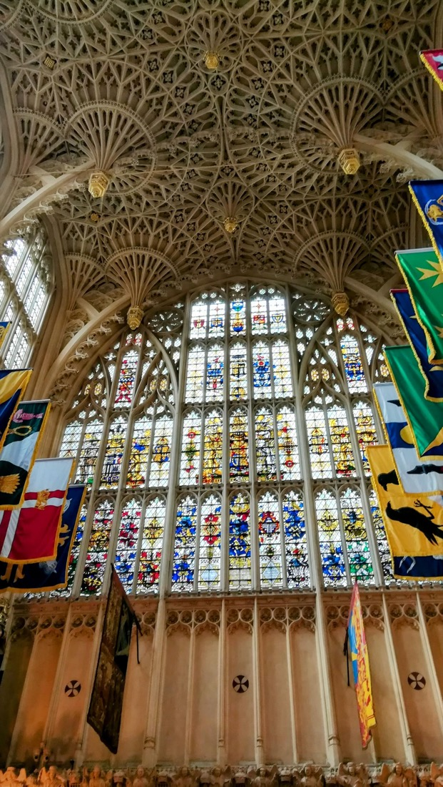
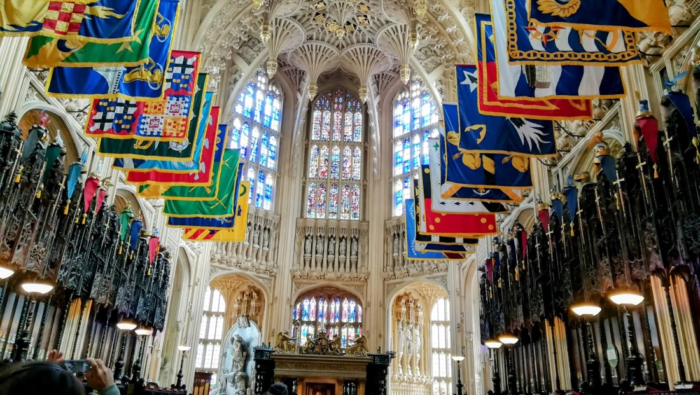
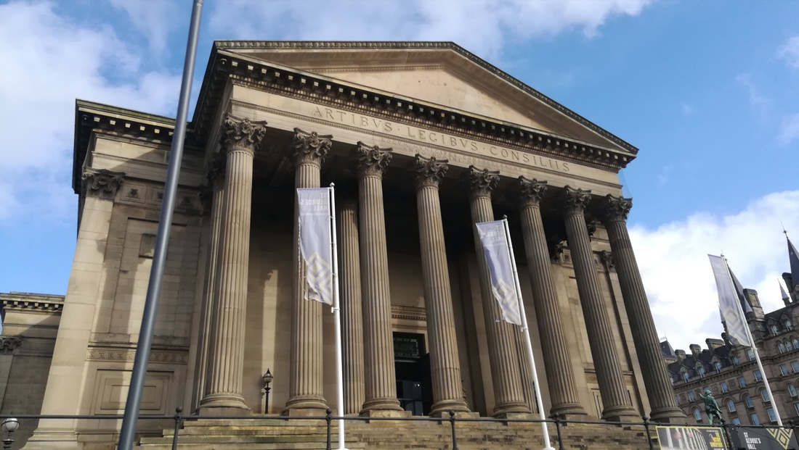
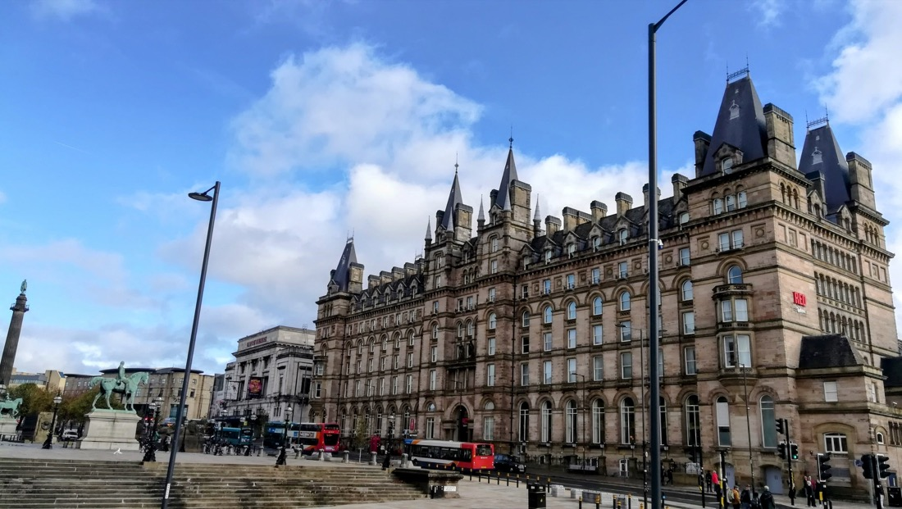
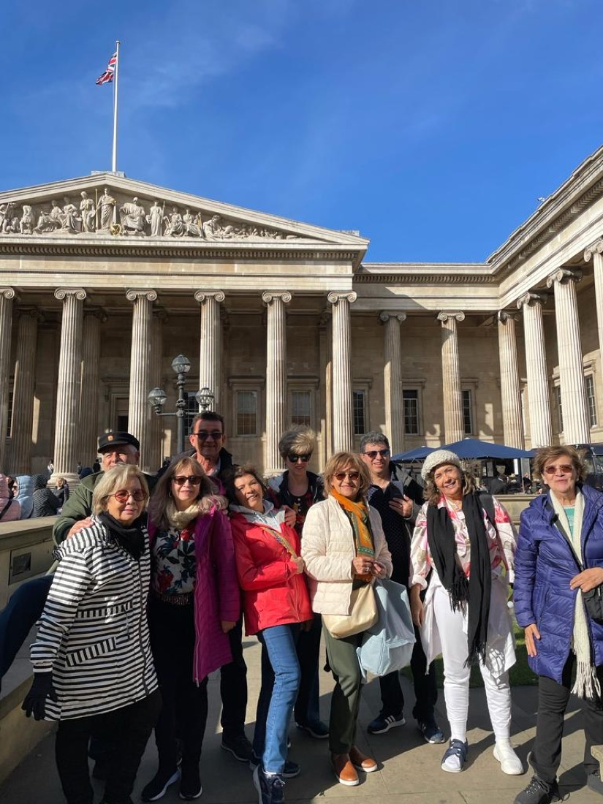
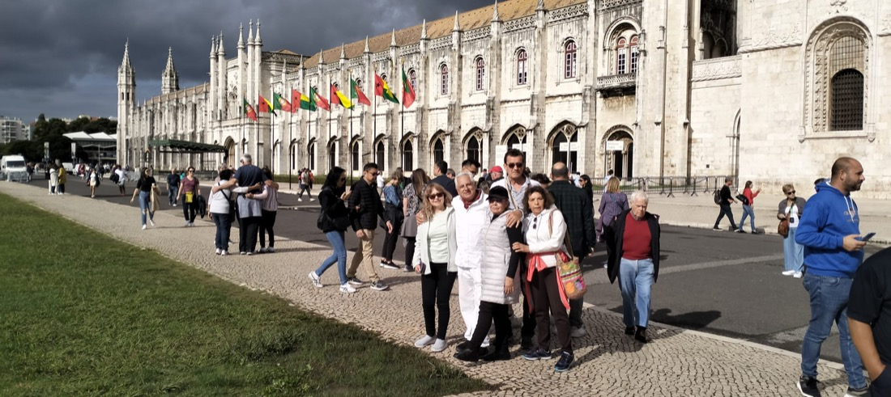
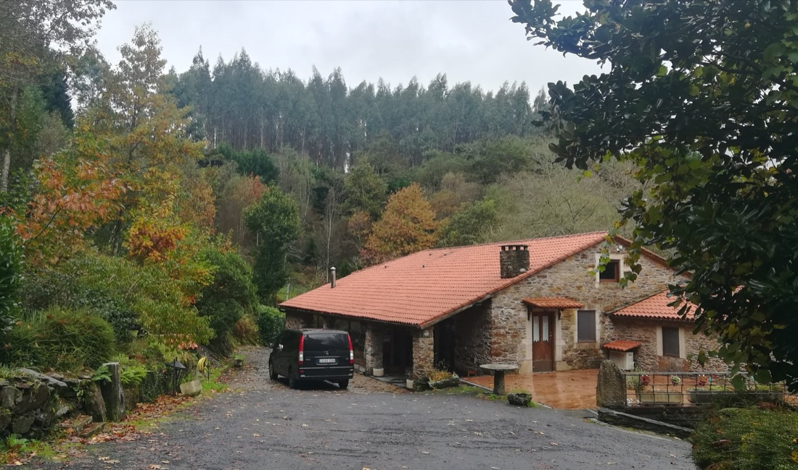